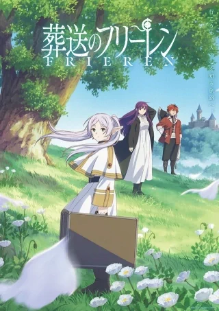
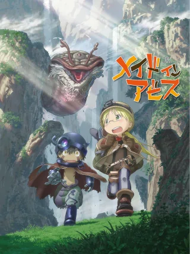

关于我
自我介绍 ...悲观主义者、科学与神学的信徒、主动离群的人。崇尚深入的思考与内心世界的完善。不追星，不刷短视频，也不养猫。平时听听歌、画会儿画，偶尔看几集动漫作品。
就这样，一个人，挺好。
我的故事
名字
千辛万苦换来的名字。ローマ字、发音、寓意以及 sumiyo.link 这个域名都很中意。代表着最清新、纯真的女孩子。
爱好
看过的动漫
这里是咱们看过的动漫。品味比较独特，最喜欢托尔金式的创世类作品，比较反感所谓的恋爱番。
葬送のフリーレン2020

メイドインアビス2017
我的博客
很早就想做个自己的网站了。2023 年 2 月的一天，在 Cloudflare 的帮助下，我成功部署了网站的第一个版本。当然，和现在的样子大有不同。网站的框架基本上是咱自己搭的。这里是项目地址: github.com/。 自学的编程，多有漏洞，请多谅解！ 底层灵感源自 kotobank.jp/。和最初的设想一样: 简洁，却不失优雅。它不是最好的，但一定是最独一无二的。
2024 年 11 月，咱在 Namesilo 上注册了 sumiyo.link 这个域名（".link" 后缀比较低调）
2025 年初，首轮优化结束，调整全部脚本的函数声明方式，彻底放弃了对 jQuery 库的依赖。4 月，这里遭受了一场小规模的后台爆破攻击，好在事情没有闹大。
备注
- 博主有不定期删改文章的习惯，只留最有价值的。
- 这里不支持交换友链哦。